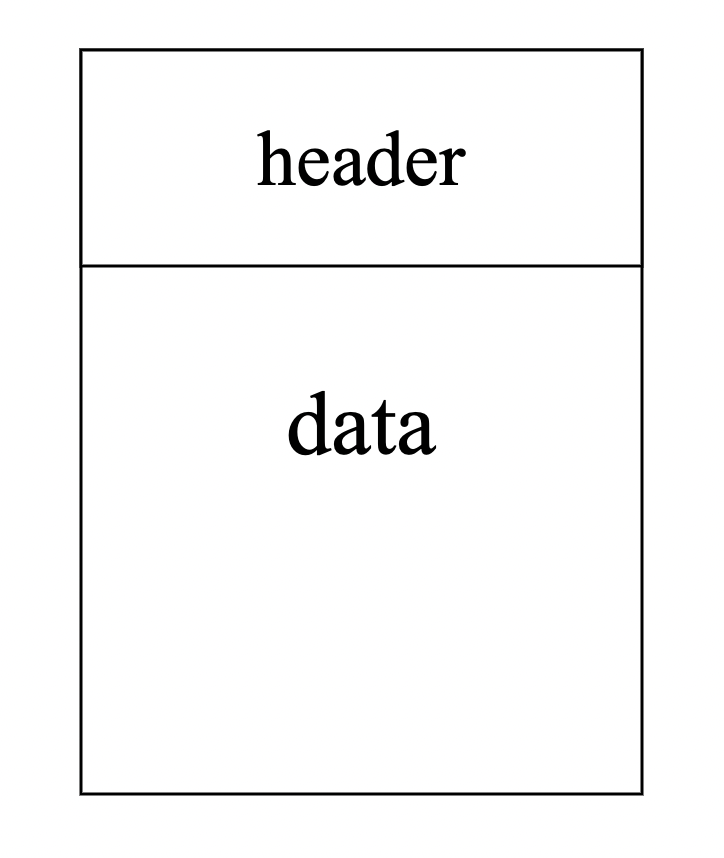
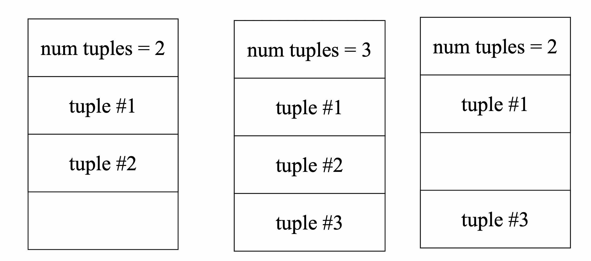
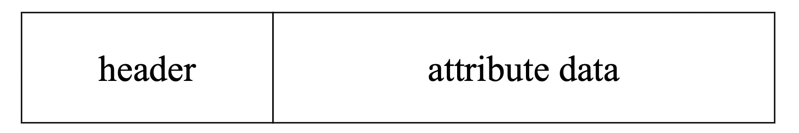

Page Directory

1. Disk-oriented architecture.
2. File Storage.
3. Page layout structure.
4. Tuple layout structure.
Мы сосредоточимся на архитектуре СУБД, которая предполагает, что основное место хранения базы данных находится на энергонезависимом хранилище.
В верхней части иерархии хранения находятся устройства, расположенные ближе всего к ЦП. Это самое быстрое хранилище, но оно также самое маленькое и самое дорогое. Чем дальше вы отходите от ЦП, тем больше емкость запоминающих устройств, но они намного медленнее. Эти устройства также становятся дешевле в пересчете на ГБ.
Проектирование для обеспечения высокой производительности требует учета ограничений иерархии памяти, то есть размера и возможностей каждого компонента.
1. 0.5 nanoseconds L1 cache reference
2. 7 nanoseconds L2 cache reference
3. 100 nanoseconds DRAM
4. 150,000 nanoseconds SSD
5. 10,000,000 nanoseconds HDD
6. ~30,000,000 nanoseconds Network Storage
Случайный доступ на чтение/запись в случае SSD ~70 микросекунд, в случае с HDD ~10-15 миллисекунд
Пропусная способность чтения/записи SATA SSD ~600 мегабайт в секунду, NVME SSD ~3.5 гигабайт в секунду.
https://arxiv.org/pdf/2102.11198.pdf
https://habr.com/ru/post/154235/
Компоненты СУБД управляют перемещением данных между энергонезависимой и энергозависимой памятью.
Система не может работать с данными непосредственно на диске, без предварительного перемещения в энергозависимые хранилища.
Разрешить СУБД управлять базами данных, которые превышают объем доступной памяти.
Чтение/запись на диск требует больших затрат, поэтому следует максимально сократить их количество, чтобы избежать больших задержек и снижения производительности.
Использование системного вызова mmap. Отобразить содержимое файла в адресное пространство процесса.
Операционная система отвечает за перемещение данных для перемещения страниц файлов в память и из памяти.
madvise: сообщить ОС, последующую стратегию чтения страниц.
mlock: сообщить ОС, что диапазон страниц нельзя выгружать из памяти.
msync: сообщить ОС, сделать синхронизацию диапазона страниц.
Многие системы используют такой подход полностью или частично (monetDB, levelDB, mongoDB).
Операционная система не может эффективно понимать какие страницы нужно сбрасывать на диск, какие стоит оставить в памяти для повторного обращение.
1. Правильный порядок сброса страниц на диск.
2. Предварительная загрузка данных (Prefetch).
3. Разделение ресурсов и планирование (Resourse IO scheduling).
4. Тяжело управлять политикой кэширования (Cache policy).
Система управление базами данных может делать это эффективнее.
СУБД хранит базу данных в виде одного или нескольких файлов на диске. ОС ничего не знает о содержимом этих файлов.
Ранние системы 1980-х годов использовали пользовательские файловые системы взаимодействуя с сырыми (raw) девайсами.
Некоторые корпоративные СУБД все еще поддерживают это (Oracle).
Большинство новых СУБД этого не делают.
Storage Manager отвечает за хранение файлов базы данных.
1. Организация файлов как некоторый набор страниц.
2. Отслеживание чтения/записи данных на страницы.
3. Мониторинг доступного пространства.
4. Может отвечать за планирование чтения и записи. Улучшать локальность данных на страницах.
Страница — это блок данных фиксированного размера (Обычно 512B - 16KB).
Она может содержать кортежи, метаданные, индексы, записи WAL.
Каждой странице присваивается уникальный идентификатор.
СУБД использует косвенный уровень для сопоставления идентификаторов страниц с их физическим местоположениям на диске.
СУБД по разному организуют хранение страниц в файлах на диске.
Интерфейс создать, прочитать, записать, удалить страницу.
Нужны метаданные, чтобы отслеживать, какие страницы существуют и на каких есть свободное место.
1. Heap File
2. Sequential / Sorted file Organization
3. Hashing File Organization
Это неупорядоченный набор страниц где кортежи, хранятся в случайном порядке.
1. Связный список (Linked List)
2. Директория страниц (Page Directory)
Заголовочная (HEADER) страница в начале файла, на которой хранится два указателя:
1. Голова (HEAD) списка свободных страниц.
2. Голова (HEAD) списка страниц заполненных данными.
Каждая страница сама отслеживает количество свободных слотов.
В случае variable length, нельзя иметь полностью заполенные страницы.
СУБД поддерживает специальные страницы, которые отслеживают расположение страниц данных в файлах базы данных.
В каталоге также фиксируется количество свободных мест на странице.
СУБД должна убедиться, что страницы каталога синхронизированы со страницами данных.
Каждая страница содержит заголовок с мета-данными о содержимом страницы.
1. Размер страницы
2. Контрольная сумма (Checksum)
3. Версия СУБД
4. Видимость транзакции (Transaction visibility)
5. Информация о сжатии (Compression information)
Теперь для любой архитектуры хранения страниц нам необходимо понять, как организовать данные, хранящиеся внутри страницы. Мы по-прежнему предполагаем, что храним только кортежи.
1. Tuple-oriented
2. Log-structured
Храним в заголовке количество кортежей. Кортежи записываем после заголовка.
Храним массив свободных слотов в странице, каждый слот хранит указатель на начало записи кортежа и его длину.

Последовательность байт, задачу СУБД проинтерпретировать ее.
Имеет заголовок с метаданными:
1. Метаданные о транзацкии (Transaction visibility).
2. Битовая маска для значений NULL.
СУБД нужен способ отслеживать отдельные кортежи. Каждому кортежу назначается уникальная запись идентификатор.
Обычно это page_id + offset/slot. Также может содержать информацию о расположении файла.